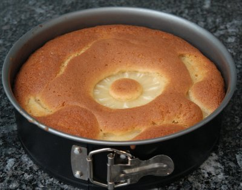

| Zutaten: | |
| 4 | Scheiben Ananas |
| 125 g | Butter oder Margarine |
| 125 g | Zucker |
| 2 | Eier |
| 200 g | Mehl |
| 2 TL | Backpulver |
| 1 Prise | Salz |
| Zum Glasieren: | |
| 2 EL | Quittengelée |
Springform 22 cm Ø
Ofen auf Mittelhitze (180°C) vorheizen. Form befetten und bemehlen.
Ananas aus Dose abtropfen lassen; Saft zurückbehalten. 3 Ananasscheiben halbieren.
Butter, Zucker und Eier schaumig rühren. 1 dl Ananassaft darunter rühren.
Mehl, Backpulver und Salz dazu sieben. Mischen.
Teig in die Form einfüllen.
Die halbierten Ananasscheiben kranzförmig auf den Teig legen. Die ganze Scheibe kommt in die Mitte.
Kuchen 40 - 50 Minuten backen. Auskühlen lassen.
Glasur: Gelée erwärmen. Ananasscheiben damit glasieren.
Herbert Eigenmann, Code: ANK
Hat am 11.4.2008 ganz OK geschmeckt. RE
@LINKBACK_TAG@ @WAKELOCK@